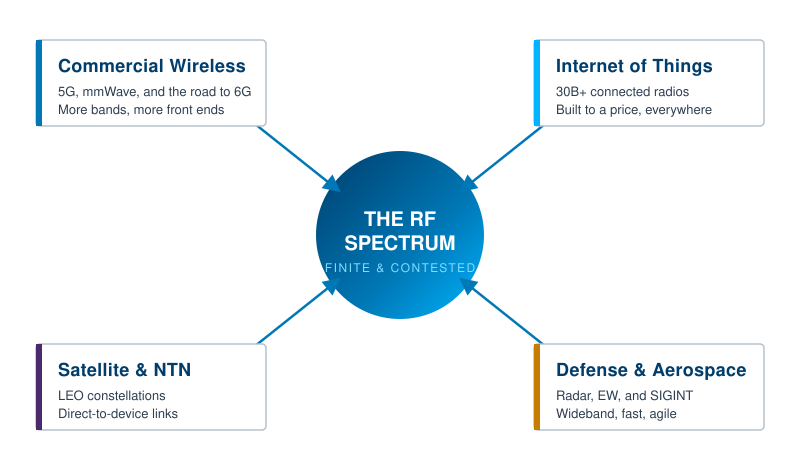

Radio frequency used to be a quiet specialty. It sat behind the antenna, inside the radio, somewhere in the part of the product that "just worked." That is no longer true. RF has become one of the most contested resources of the decade, and the ability to measure it well has become a competitive advantage rather than a back-office skill.
This chapter sets the stage for the rest of the book. It explains what changed since the first edition, why measurement sits at the center of nearly every modern RF problem, and how to read the chapters that follow depending on what you are trying to do.
Spectrum is finite. Every new wireless service, from a 5G base station to a doorbell camera to a weather radar, has to share the same electromagnetic real estate. As more devices come online, the air gets crowded, interference gets harder to track down, and the margins that engineers once relied on get thinner.
The numbers make the pressure concrete. Industry forecasts put the installed base of connected IoT devices above 30 billion units within the next decade, each one needing at least one radio. [1] Mobile data traffic on 5G networks, roughly 14 exabytes per month at the end of 2022, is projected to climb toward 300 exabytes per month by the end of the decade. [2] All of that traffic moves through the same finite spectrum, which is why regulators, carriers, and defense planners now treat frequency allocation as strategic infrastructure.
When a resource gets scarce and valuable at the same time, the people who can measure it precisely win. That is the through-line of this book.

Four forces are pushing harder on the spectrum than anything the first edition anticipated.
Commercial wireless. 5G moved part of the industry into millimeter-wave bands (roughly 24 to 40 GHz), where wavelengths are short, beams are narrow, and the front-end electronics multiply. Moving a base station from sub-6 GHz to mmWave can increase the number of RF front-end modules by two to three times. [3] More front ends mean more things to characterize, calibrate, and troubleshoot.
The Internet of Things. Billions of low-cost radios, most of them built to a price, are now embedded in everything from pallets to pacemakers. They are individually simple and collectively overwhelming, and they all have to coexist without stepping on each other.
Satellite and non-terrestrial networks. Low-earth-orbit constellations and direct-to-device satellite links have turned the sky into an active layer of the network. Signals now arrive from overhead as well as across the street.
Defense and aerospace. Radar, electronic warfare, and signals intelligence have returned to the front of national priorities. Wideband capture, fast scanning, and the ability to find a brief signal in a noisy band are no longer niche requirements.
Designing an RF system is hard. Proving that it works is harder. A modern signal can be wide, brief, frequency-hopping, and buried under other signals, and none of those properties show up on a casual look. The instrument and the technique you choose decide whether you see the problem or miss it.
This is why the bulk of this book is about measurement: spectrum analysis, network analysis, noise figure, and the transmitter, receiver, and EMI tests that turn a design into a product. The physics has not changed since the first edition. What has changed is the difficulty of the signals, and therefore the demands placed on the equipment and the operator.
Going Deeper - What "the first edition" assumed
The first edition of this course was written as a practical introduction for engineers and technicians stepping into RF measurement. It is still correct. This edition keeps that foundation and adds the parts of the field that grew up around it: real-time analysis, modern wireless standards, and the defense and aerospace applications that now drive much of the test market.
Three areas grew enough since 2022 to deserve their own chapters in this edition.
Real-time and FFT-based analysis matured from a specialty into a mainstream technique, because swept analyzers cannot reliably catch the brief, agile signals that modern systems produce. Modern wireless moved from "5G is coming" to "5G is here and 6G is being written," with the first 6G specifications expected around the end of 2028 and early commercial networks near the end of the decade. [4] And defense RF re-emerged as a primary driver of instrument requirements, pulling wideband capture and fast scanning into the standard toolkit.
The rest of the book reflects that shift. The early chapters build the fundamentals. The middle chapters cover the core measurements. The later chapters connect those measurements to the systems that depend on them today.
You do not have to read this book front to back. It supports three paths.
If you are learning the field, read in order. Each chapter builds on the one before it, and the fundamentals in Chapters 2 and 3 carry the rest.
If you are choosing instruments for a test project, start with the measurement chapters that match your task (spectrum analysis, network analysis, noise figure, or the transmitter, receiver, and EMI chapters), then use the instrument selection guide in the appendices.
If you are designing and validating RF hardware, the network analysis, noise, and EMI chapters will matter most, along with the modern wireless and defense chapters that describe the systems your hardware lands in.
BNC in Practice - Why Berkeley Nucleonics wrote this
Berkeley Nucleonics builds RF and microwave test instruments, and the questions in this book are the questions customers ask before they buy and while they build. The reader companion at the top of each page can route you to the chapters that fit your work and, if you want one, send a free printed copy.
Take it interactively. The quiz lives on its own page with hidden answers - write your attempt first (even four characters works), then reveal. Self-graded. About 10 minutes.
Or read the questions and answers inline below (preserved for print and offline use).
[1] IndexBox, "Radio Frequency Integrated Circuit Market Growth Outlook," 2025 (IoT installed base projection). Verify current figure before publication.
[2] Ericsson and industry mobility data, 5G monthly traffic growth, 2022 to 2029. Verify current figure before publication.
[3] Industry RF front-end analyses on sub-6 GHz to mmWave front-end content, 2024. Verify current figure before publication.
[4] Ericsson, "6G standardization timeline and technology principles," 2024; 3GPP Release 21 planning materials. Verify current dates before publication.